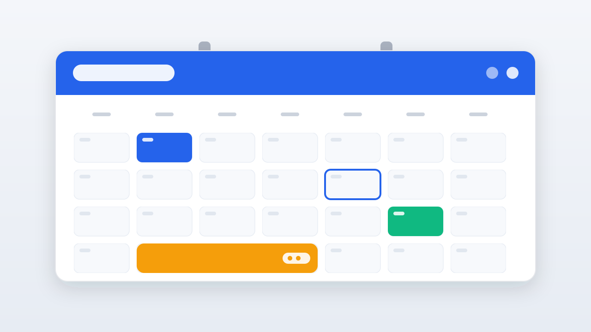

▸
GeorgeLands
making things happen
☾
George — my calendar and my projects
my time
live
My Calendar
Where I'm going and when

Check my calendar
→
my work
Projects
Random things I build — click one to open it
See all projects
→